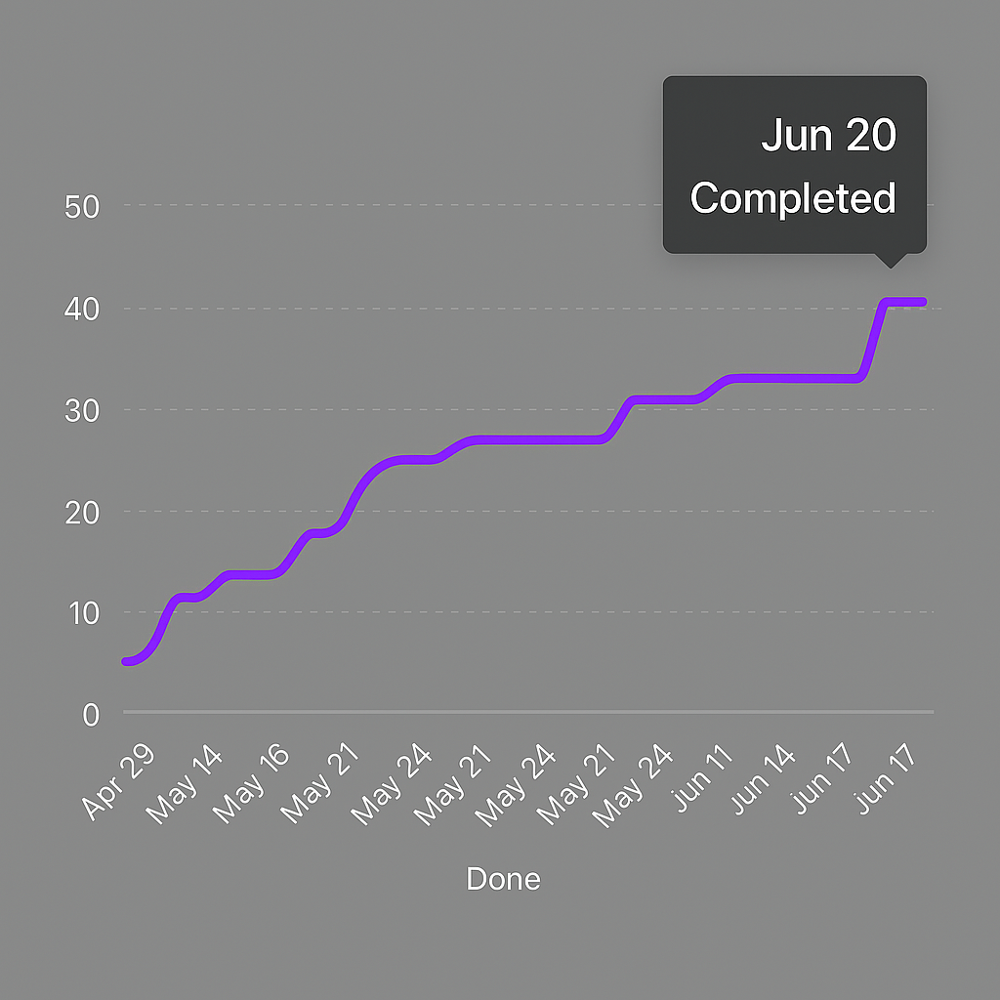
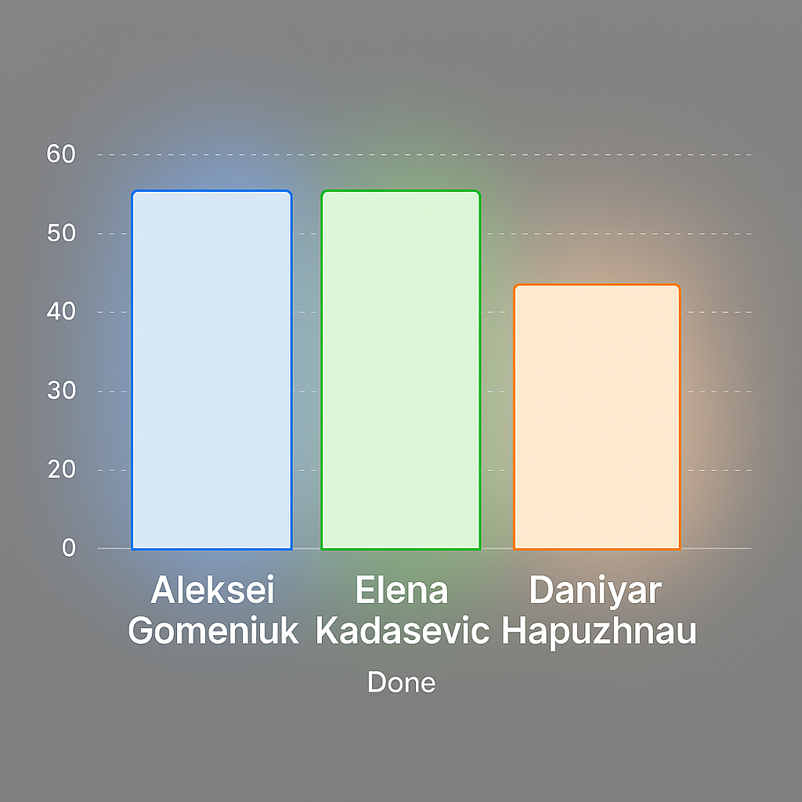
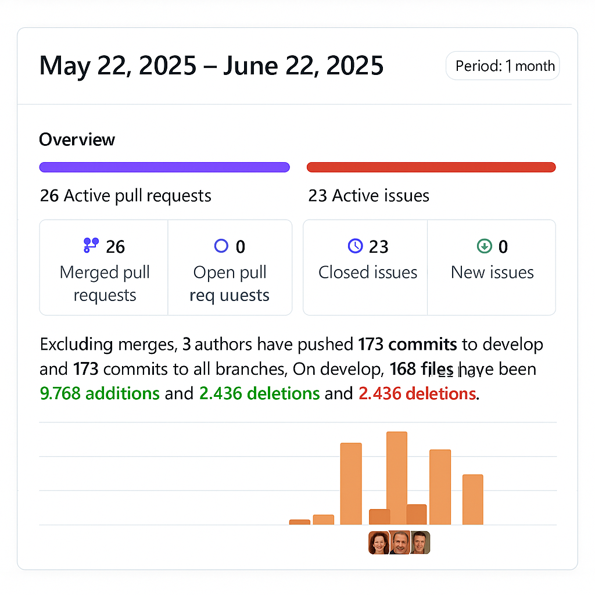
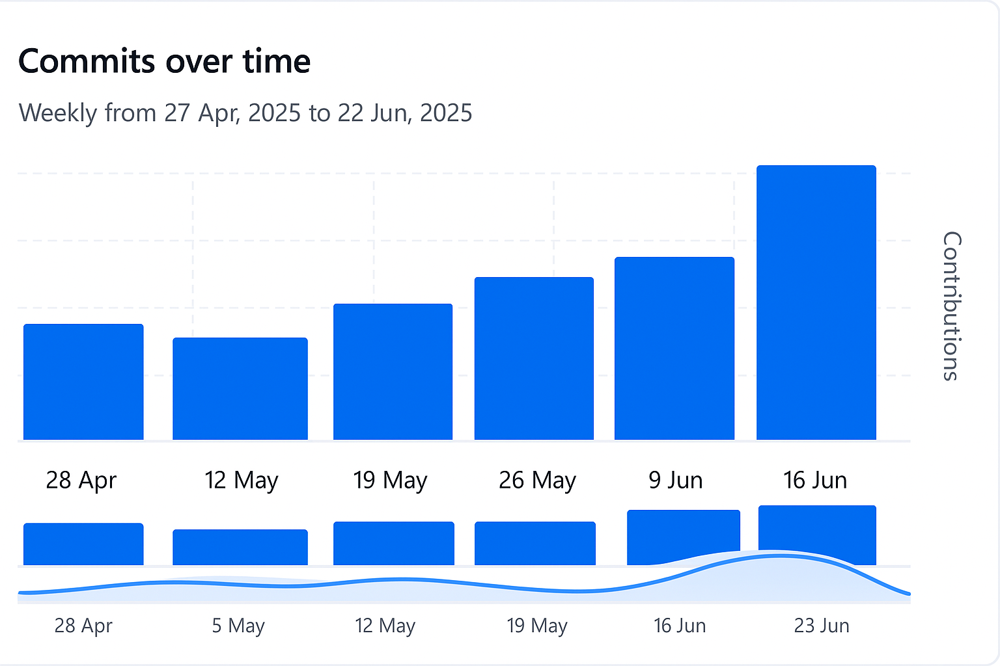
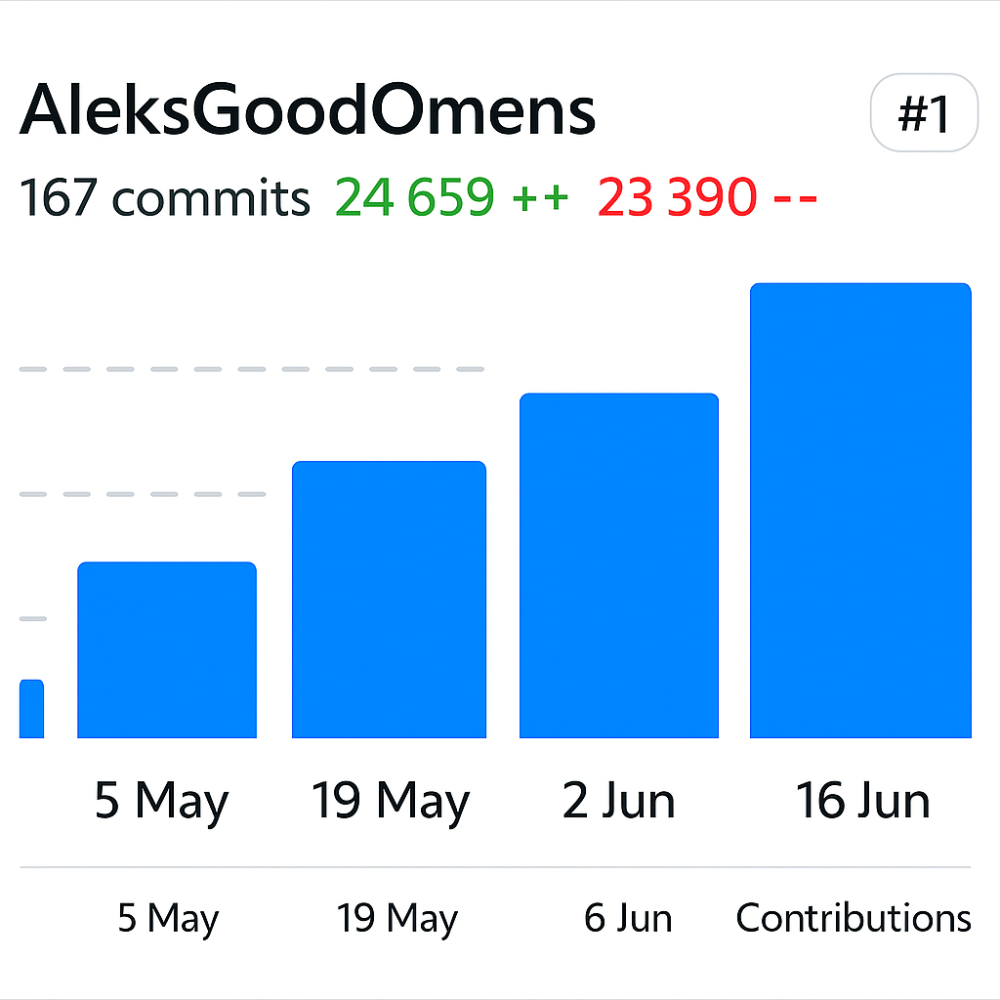
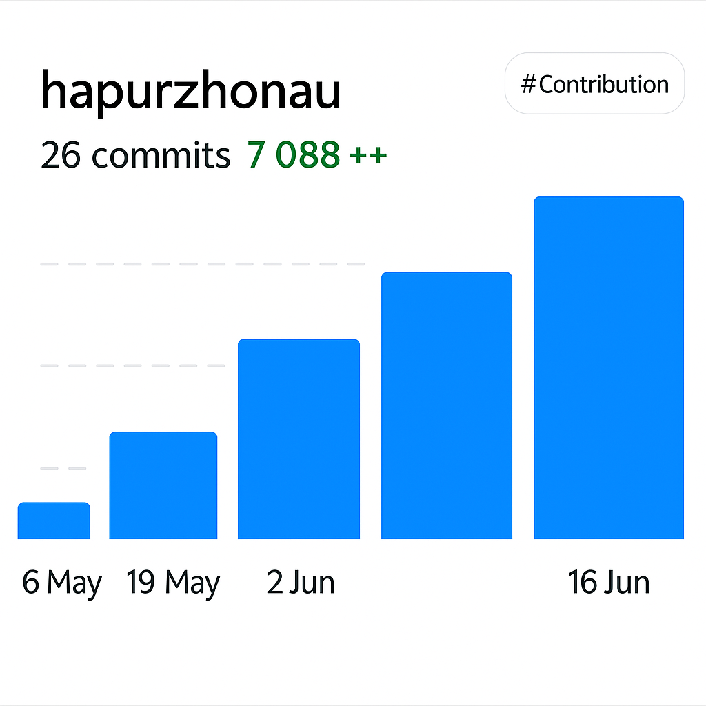
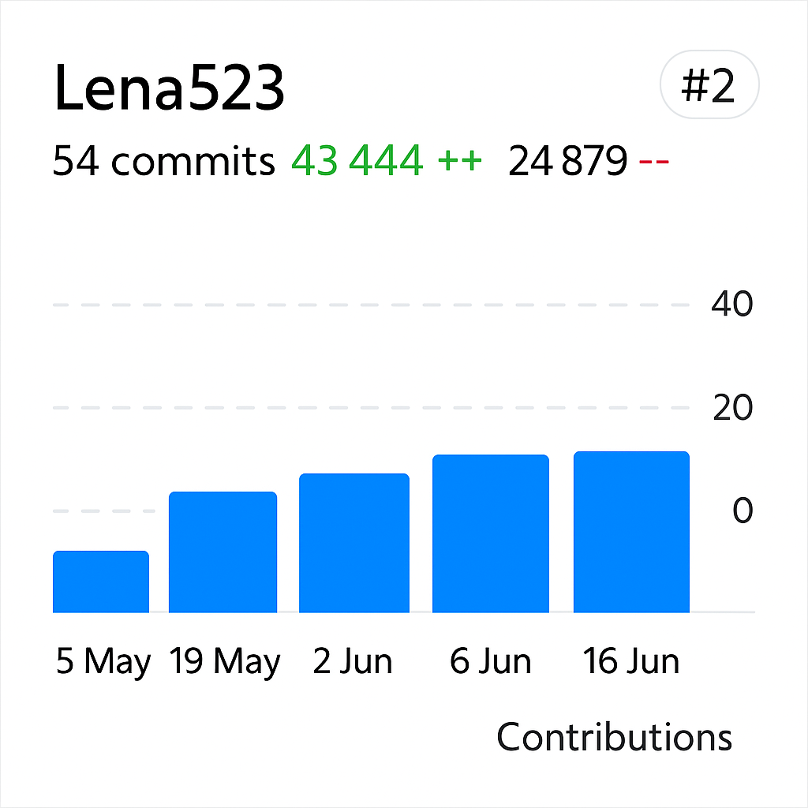

Resolved blockers through team problem-solving sessions
Continuous feedback reduced technical debt and boosted quality
Brainstormed and built unique features
Practiced pair programming to speed up feature delivery
Clear task states improved transparency and accountability
Weekly planning rituals aligned team goals

Total completed issues

Completed issues per each member
Daily check-ins maintained team rhythm and flow
Quick chat syncs resolved blockers instantly
Assigned tasks based on strengths and growth goals
Used story points to estimate effort realistically
Balanced activity across contributors
Spikes aligned with sprint deadlines





Active discussion improved modularity in a key refactor
Suggestions boosted readability and test coverage
Based on Pull Request #44 — Customer Login
39-feature_customer_login createdsprint-2“Far-sighted solution” — @hapurzhonau
“It's better to check the structure of default values” — @Lena523
“Well done, thanks for work” — @Lena523
localStorageClear local setup for fast onboarding
Contribution guide with conventions ensured consistency
A full-featured eCommerce web app that replicates real-world shopping experiences — from discovery to checkout. Fully responsive and powered by CommerceTools.
React + TypeScript + Commercetools for robust type-safe e-commerce
Used ESLint, Prettier, media queries for clean UI and responsiveness
Feel free to explore the code and try it out!
Built with ❤️ by the Just Code It team